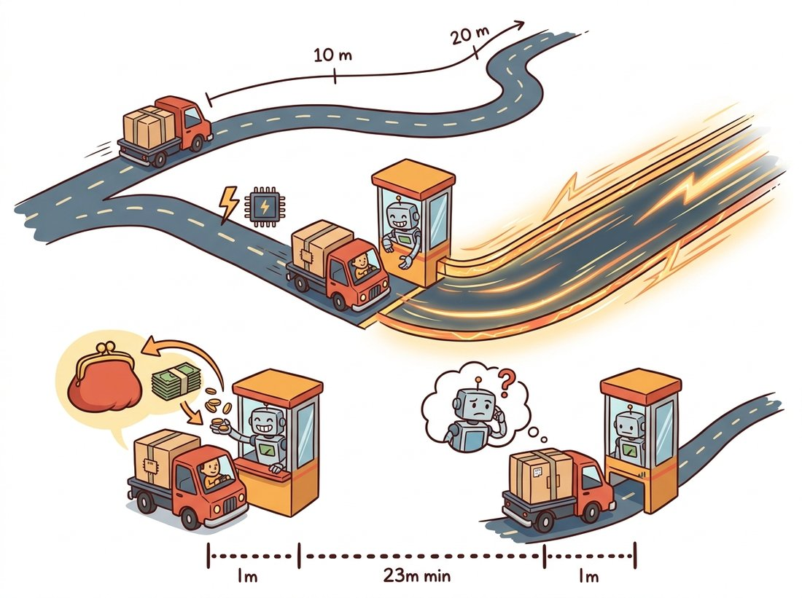

"They profiled me and discovered I spend 94 percent of my life inside two lines of Python. I prefer to think of it as having a rich inner loop."
A Thoroughly Profiled Imaging Pipeline
Making imaging code fast is not about writing cleverer Python; it is about moving the inner loop out of Python entirely, into NumPy's C loops, OpenCV's SIMD kernels (SIMD, Single Instruction Multiple Data, is the CPU feature that applies one operation to many pixels at once), Numba's compiled output, or a GPU, in that order of effort. The interpreter costs roughly a microsecond per pixel visited; compiled code costs roughly a nanosecond. Everything in this section is a strategy for crossing that thousandfold gap, and the first rule is to measure before touching anything.
The previous section (Section 8.1) chose the libraries; this one makes them fast. The need is real: a single 4K frame holds 8.3 million pixels, and a 30 fps pipeline gives you 33 milliseconds to do everything Chapter 2 through Chapter 7 taught. This section climbs the performance ladder one rung at a time, measuring at every step, and ends at the rung where Part III of this book lives permanently: the GPU.
1. Measure First: Honest Timing Beginner
Optimization without measurement is superstition. Before rewriting anything, establish a number with a harness that handles the three classic timing traps: one-time costs (thread-pool spin-up, JIT compilation, where JIT means just-in-time, compiling code to machine instructions on its first call, and lazy library initialization) that inflate the first call, run-to-run noise from the operating system, and, for GPUs, asynchronous execution that makes naive stopwatch timing measure only the kernel launch. Code 8.2.1 is the small harness used for every number in this section.
# Honest-timing harness used for every measurement in this section.
# Warm-up runs absorb one-time costs; the median of several repeats
# resists operating-system scheduling noise.
import time
import numpy as np
def bench(fn, *args, repeats=7, warmup=2):
"""Median-of-repeats timing with warm-up runs."""
for _ in range(warmup): # absorb one-time costs: thread pools,
fn(*args) # JIT compilation, lazy initialization
times = []
for _ in range(repeats):
t0 = time.perf_counter()
fn(*args)
times.append(time.perf_counter() - t0)
return float(np.median(times)) # median resists OS scheduling spikes
Two habits complete the discipline. First, time the stages of a pipeline separately, not just the whole; the slow part is almost never where intuition points. Second, record the image size and dtype next to every number, because a result measured on a 512×512 uint8 thumbnail says little about a 4K float32 frame: the larger image may not fit in cache, and memory traffic, not arithmetic, usually dominates.
2. The Vectorization Ladder Intermediate
The single most common performance bug in imaging code is a per-pixel Python loop. Code 8.2.2 implements the same gamma correction (the point operation from Chapter 2, $I' = 255\,(I/255)^{\gamma}$) four ways, from a raw double loop to OpenCV's SIMD lookup table (LUT). A LUT precomputes the answer for every possible input value once, then replaces each pixel by an array lookup; because a uint8 pixel has only 256 possible values, the whole image's gamma curve is just 256 stored results that indexing copies into place. The illustration below frames the fix as climbing a ladder rather than writing a cleverer loop.
# Four climbs up the performance ladder for one gamma correction:
# a pure-Python double loop, a vectorized expression, a NumPy lookup
# table, and OpenCV's SIMD-dispatched LUT, timed against each other.
import numpy as np, cv2
img = np.random.default_rng(0).integers(0, 256, (1080, 1920), dtype=np.uint8)
GAMMA = 0.5
def gamma_loop(im): # tier 0: pure Python, ~2 M iterations
out = np.empty_like(im)
for r in range(im.shape[0]):
for c in range(im.shape[1]):
out[r, c] = round(255 * (im[r, c] / 255) ** GAMMA)
return out
def gamma_vec(im): # tier 1: one whole-array expression
return (255 * (im / 255.0) ** GAMMA + 0.5).astype(np.uint8)
TABLE = np.array([round(255 * (v / 255) ** GAMMA) for v in range(256)],
dtype=np.uint8) # uint8 input has only 256 cases
def gamma_lut_np(im): # tier 2: precomputed lookup table
return TABLE[im]
def gamma_lut_cv(im): # tier 3: OpenCV's SIMD-dispatched LUT
return cv2.LUT(im, TABLE)
for f in (gamma_loop, gamma_vec, gamma_lut_np, gamma_lut_cv):
print(f"{f.__name__:13s}: {bench(f, img) * 1000:8.1f} ms")
gamma_loop : 2410.3 ms gamma_vec : 46.2 ms gamma_lut_np : 4.8 ms gamma_lut_cv : 1.2 ms
The most counterintuitive line in that table is the LUT tier, and the reason is worth pausing on: the lookup table holds exactly 256 values whether the frame is a 64×64 thumbnail or an 8K wall display, so once you build it the per-pixel cost of gamma stops depending on the gamma formula and stops caring how complicated the formula is. A single gamma curve, a five-term tone map, and a hand-painted artistic transfer function all collapse to the same 256-entry table and therefore run at exactly the same speed. The expensive math happens 256 times, total; the millions of pixels only ever do an array index.
The ladder generalizes far beyond gamma. Whole-array arithmetic, boolean masking (img[img > t] = 255), broadcasting, and fancy indexing cover most of Chapter 2; np.pad plus slicing reproduce the border modes of Chapter 3; and the array model that makes all of it possible was the subject of Chapter 0. Two refinements buy further factors: prefer float32 to float64 when precision allows (half the memory traffic, and OpenCV's float paths are float32-first), and avoid accidental copies; an expression like a + b + c allocates a full temporary per operator, which np.add(a, b, out=buf) avoids in tight real-time loops. The whole section reduces to one rule worth keeping: measure first, then get the loop out of Python, climbing only as far up the ladder as the deadline demands. Figure 8.2.1 places all the tiers of this section on one chart.
For most Part I operations the processor is starved, not busy. A 3×3 box filter does 9 multiply-adds per pixel but must move every pixel through the memory hierarchy at least twice; on a modern CPU the arithmetic finishes long before the next cache line arrives. This is why the float32-over-float64 switch helps (half the bytes), why chaining ten small NumPy operations is slower than one fused expression (each pass re-streams the whole image), and why a GPU's advantage on these workloads is mostly its memory bandwidth (hundreds of GB/s versus tens). When you optimize, count bytes moved before you count FLOPs.
A from-scratch local standard deviation map (the texture measure used for adaptive thresholding in Chapter 2) is a roughly 25-line windowed double loop with border bookkeeping. The identity $\operatorname{Var}[x] = \mathbb{E}[x^2] - \mathbb{E}[x]^2$ turns it into three calls to a box filter from Chapter 3:
# Local standard deviation map without an explicit window loop:
# the identity Var[x] = E[x^2] - E[x]^2 turns it into three
# box-filter passes over the image.
from scipy import ndimage
f = img.astype(np.float32)
m = ndimage.uniform_filter(f, size=7) # E[x] over each 7x7 window
m2 = ndimage.uniform_filter(f * f, size=7) # E[x^2]
sigma = np.sqrt(np.maximum(m2 - m * m, 0.0)) # clamp tiny negatives (round-off)
About 25 lines become 3, and the library supplies separable filtering (two 1D passes instead of a 2D window), correct border handling, and compiled C inner loops. The same trick computes local means for Niblack/Sauvola-style thresholds and local contrast for enhancement.
3. OpenCV's Hidden Gears Intermediate
OpenCV is fast by default, but it pays to know which gears are turning. Builds dispatch at runtime to the widest SIMD instruction set the CPU offers (SSE4, AVX2, AVX-512, NEON), many functions parallelize across a thread pool, and cv2.useOptimized() reports whether the optimized dispatch is active. Algorithmic gears matter even more: cv2.GaussianBlur runs as two separable 1D passes, turning the $O(k^2)$ per-pixel cost derived in Chapter 3 into $O(2k)$, and cv2.filter2D silently switches to the FFT route from Chapter 4 when the kernel is large enough for the $O(N \log N)$ transform to win. Code 8.2.3 inspects and exercises these gears, reusing the harness from Code 8.2.1.
# Inspect and exercise three OpenCV speed gears on a 4K frame:
# runtime SIMD dispatch, the thread pool (toggled via setNumThreads),
# and the Transparent API that routes the same calls through OpenCL.
import cv2, numpy as np
img = np.random.default_rng(1).integers(0, 256, (2160, 3840), dtype=np.uint8)
print("optimized:", cv2.useOptimized(), "| threads:", cv2.getNumThreads())
blur = lambda im: cv2.GaussianBlur(im, (31, 31), 5.0)
t_par = bench(blur, img) # default: all cores
n = cv2.getNumThreads()
cv2.setNumThreads(1) # serial baseline for comparison
t_ser = bench(blur, img)
cv2.setNumThreads(n) # restore the pool
print(f"31x31 Gaussian, {n} threads: {t_par*1000:6.1f} ms")
print(f"31x31 Gaussian, 1 thread : {t_ser*1000:6.1f} ms")
if cv2.ocl.haveOpenCL(): # Transparent API: same calls, GPU/iGPU
u = cv2.UMat(img) # upload once to the OpenCL device
t_gpu = bench(lambda im: cv2.GaussianBlur(im, (31, 31), 5.0), u)
print(f"31x31 Gaussian, UMat : {t_gpu*1000:6.1f} ms")
setNumThreads), and the Transparent API, where wrapping an array in cv2.UMat routes the very same function calls through OpenCL to a GPU or integrated GPU. result.get() brings a UMat back to NumPy.optimized: True | threads: 8 31x31 Gaussian, 8 threads: 7.9 ms 31x31 Gaussian, 1 thread : 31.6 ms 31x31 Gaussian, UMat : 3.2 ms
One caution: the pip wheels of opencv-python ship without CUDA, so the cv2.cuda module is empty unless you build OpenCV yourself or use a vendor build. For NVIDIA GPU work from Python, the CuPy route in Section 5 is usually the shorter path.
4. Numba: When the Loop Must Stay Advanced
Some algorithms resist whole-array form because each output depends on a previously computed output: scanline accumulations, region growing, dithering with error diffusion (Chapter 1), adaptive recursions. For these, Numba compiles the Python loop itself to machine code. Code 8.2.4 shows the pattern on a per-row exponential moving average, a data-dependent scan NumPy cannot vectorize directly.
# Numba compiles a data-dependent scan that NumPy cannot vectorize:
# a per-row exponential moving average where each output depends on
# the previous one, with independent rows parallelized across cores.
from numba import njit, prange
import numpy as np
@njit(parallel=True, cache=True)
def row_ema(im, alpha):
"""Per-row exponential moving average: out[c] depends on out[c-1],
so the scan cannot be a single whole-array expression."""
out = np.empty(im.shape, dtype=np.float32)
for r in prange(im.shape[0]): # rows are independent: parallel
out[r, 0] = im[r, 0]
for c in range(1, im.shape[1]): # columns are sequential: a scan
out[r, c] = alpha * im[r, c] + (1.0 - alpha) * out[r, c - 1]
return out
smooth = row_ema(img.astype(np.float32), 0.1) # first call compiles (~0.5 s)
@njit compiles the function to machine code on first call (cached to disk with cache=True), and prange parallelizes the independent outer loop across cores. Loop bodies must stick to NumPy arrays and scalars; no Python objects.Typical results land within a small factor of hand-written C, which puts Numba on the same rung as OpenCV in Figure 8.2.1, for code OpenCV never implemented. The costs are a first-call compilation pause, a restricted Python subset inside compiled functions, and one more dependency to manage; the benefit is keeping algorithm-shaped code readable instead of contorting it into array algebra.
The first time a developer sees a 2,000x speedup from deleting a Python loop, the usual reaction is to assume the new code is broken. It is not; the old code was just spending 99.95 percent of its time asking the interpreter for permission to add two numbers. The cruelest part is that the pure-Python version often looks the most readable, which is why it survives code review and ships, right up until an inspection line like the one below misses its frame budget by a factor of two.
Who: A vision engineer at a systems integrator building print-quality inspection for a packaging line.
Situation: 4K frames at 30 fps; the pipeline ran flat-field correction, Gaussian smoothing, thresholding, and connected components (the Chapter 6 toolkit) in 70 ms per frame, more than twice the 33 ms budget.
Problem: The team assumed the morphology was the bottleneck and began prototyping a GPU port, a multi-week detour.
Decision: The engineer first instrumented each stage with a harness like Code 8.2.1. The profile said otherwise: 41 ms went to a hand-written Python loop performing flat-field correction pixel by pixel, and another 12 ms to an accidental float64 round trip. The fix was one vectorized float32 expression ((f - dark) / (flat - dark) on whole arrays) and one dtype audit.
Result: 11 ms per frame on the existing CPU. The GPU port was cancelled.
Lesson: Profile per stage before architecting. The slow part is usually ten lines, and the cheapest accelerator is the loop you delete.
5. GPU Arrays and the Transfer Toll Advanced
CuPy reimplements the NumPy API on NVIDIA GPUs: cp.asarray ships an array to device memory, the familiar operations run as CUDA kernels, and cupyx.scipy.ndimage mirrors the SciPy filters used throughout Part I. The catch is the toll booth: data must cross the PCIe bus in both directions, and kernels launch asynchronously, so honest timing needs the library's own benchmark utility. Code 8.2.5 shows the workflow.
# The CuPy round trip: ship the array to GPU memory, run a Gaussian
# filter as a CUDA kernel, and bring the result back, timing the
# kernel with a device-synchronizing benchmark rather than a stopwatch.
import cupy as cp
from cupyx.scipy import ndimage as cundi
from cupyx.profiler import benchmark
g = cp.asarray(img) # host -> device, one PCIe transfer
print(benchmark(cundi.gaussian_filter, (g, 5.0), n_repeat=50))
result = cp.asnumpy(cundi.gaussian_filter(g, 5.0)) # device -> host
cupyx.profiler.benchmark synchronizes the device around each repeat, so it reports real kernel time rather than launch time; a plain perf_counter stopwatch around an unsynchronized call can under-report by orders of magnitude.gaussian_filter: CPU: 142.1 us +/- 9.3 GPU-0: 618.4 us +/- 12.0
That last observation is the whole strategy. A single operation rarely justifies the round trip; a resident pipeline does. Ship the frame once, run the entire chain (correction, filtering, thresholding, even the non-local means denoiser from Chapter 7, which is exactly the kind of arithmetic-heavy kernel GPUs love) on device arrays, and bring back only the result, which is often just a mask or a measurement. Amdahl's law quantifies the ceiling: accelerating a fraction $p$ of total runtime by a factor $s$ yields overall speedup
$$S = \frac{1}{(1 - p) + p / s},$$
so a pipeline that is only 70 percent GPU-eligible caps below $1/0.3 \approx 3.3\times$ no matter how fast the kernels get. The unaccelerated remainder, often disk I/O and JPEG decode from Chapter 1, then becomes the next profiling target. When the pipeline's destination is a neural network anyway, the natural move is to adopt PyTorch tensors as the resident format from the start; Chapter 18 makes that move, and Chapter 28 pushes it to the edge.
Students often read the ~5,000× bar in Figure 8.2.1 and conclude that any slow imaging operation should be pushed to the GPU. In fact that bar measures kernel time once the data already lives on the device; it excludes the host-to-device and device-to-host transfers, which for a single 4K frame (Output 8.2.5a) cost more than the blur itself. A lone cv2.GaussianBlur shipped to CuPy is usually slower end to end than the CPU version, because two PCIe crossings dwarf the saved microseconds. The GPU wins only when many operations run back to back on resident data so the one-time transfer amortizes, and the highest rung you can actually reach is capped by Amdahl's law on the fraction of work that is GPU-eligible. The diagnostic question: have you timed the transfer, or only the kernel? The illustration below dramatizes the toll booth at the entrance to the fast lane.

The acceleration story is consolidating around compilers and batching. PyTorch 2.x's torch.compile (the TorchInductor backend, maturing through 2024-2025) fuses chains of tensor operations into single generated kernels, attacking exactly the temporary-array traffic this section warned about, and Triton, the Python-embedded kernel language it emits, has become the standard way to hand-write a custom GPU kernel without CUDA C++. NVIDIA CV-CUDA (first released as open source in late 2022, with steady releases through 2025) provides batched GPU implementations of classical pre- and post-processing (resize, warp, color conversion, morphology) for inference services that process thousands of images per second, and cuCIM (RAPIDS) keeps a scikit-image-compatible API on GPUs for gigapixel biomedical work. Tying the ecosystem together, the DLPack interchange protocol lets NumPy, CuPy, PyTorch, and JAX hand each other arrays without copies, so a pipeline can cross library borders at zero transfer cost. The practical reading: learn the array model once; the compilers are coming to you.
For each operation, name the highest ladder rung it can reach and justify the answer: (a) per-pixel gamma correction of a uint8 image; (b) per-pixel gamma of a float32 image (careful: how many distinct inputs now?); (c) a 3×3 median filter; (d) Floyd-Steinberg error-diffusion dithering; (e) Otsu threshold selection followed by binarization. Which of these are LUT-able, which vectorize, and which need Numba?
Using the harness from Code 8.2.1, benchmark cv2.GaussianBlur, scipy.ndimage.gaussian_filter, and skimage.filters.gaussian on a 4K float32 image for kernel sizes 3 to 101. Plot time versus kernel size for each. Identify the slope changes and explain them using separability (Chapter 3) and the FFT route (Chapter 4). Repeat the OpenCV run with cv2.setNumThreads(1) and quantify the threading gain as a function of kernel size.
With CuPy (or a cloud GPU notebook), measure (a) host-to-device and device-to-host transfer time for a 4K uint8 frame, and (b) GPU versus CPU time for one Gaussian blur. Derive the number $k$ of chained filter operations at which the GPU pipeline (transfer + $k$ kernels + transfer) beats the CPU pipeline ($k$ CPU filters). How does $k$ change for 512×512 thumbnails? Reconcile your finding with Amdahl's law as stated in Section 5.